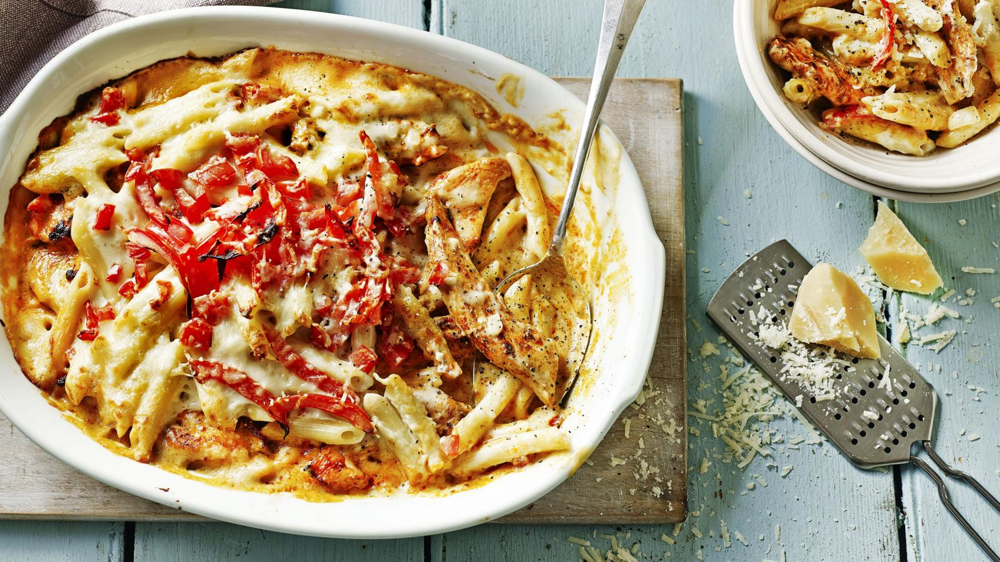

Chicken Pasta Bake

Description
A wonderfully comforting chicken pasta bake, this can be made ahead and will go down really well with the family.
Each serving provides 532 kcal, 35g protein, 46g carbohydrates (of which 10g sugars), 22g fat (of which 11.5g saturates), 4.5g fibre and 0.9g salt.
Ingredients
- butter, for greasing
- 250g/9oz penne
- 1 onion, roughly chopped
- 3 skinless, boneless chicken breasts, cut into thin strips
- 1 tbsp paprika
- 2 tbsp olive oil
- salt and freshly ground black pepper
For the sauce
- 50g/1.75oz butter
- 50g/1.75oz plain flour
- 750ml/1 pint 6 fl oz hot milk
- 1 tsp Dijon mustard
- 100g/3.5oz Parmesan cheese, coursely grated
- 2 large tomatoes, deseeded and cut into small cubes
Steps
- Preheat the oven to 220C/200C Fan/Gas 7. Butter a shallow 1.75 litre/3 pint ovenproof dish.
- Cook the penne with the onion in boiling, salted water according to the packet instructions. Drain, refresh in cold water and leave to drain again in the colander.
- Put the chicken strips in a resealable freezer bag with the paprika and a little salt and pepper, seal the bag and shake to coat.
- Heat 1 tablespoon of the oil in a large frying pan and quickly fry the chicken over a high heat for about 2 minutes until golden-brown and just cooked through (you may need to do this in batches). Using a slotted spoon, transfer the fried chicken to a plate and set aside.
- To make the sauce, melt the butter in a large saucepan, add the flour and whisk together to form a roux. Cook for 1 minute, then gradually add the hot milk, whisking over a high heat until the sauce is smooth and thickened, and allow to boil for 4 minutes. Stir in the mustard and half the cheese and season with salt and pepper.
- Add the pasta and onion to the sauce in the pan and stir together. Spoon half this mixture into the dish, arrange the chicken strips over the top and spoon the remaining pasta and sauce on top of the chicken. Scatter over the tomatoes and then top with the remaining cheese. Bake in the oven for about 20 minutes until piping hot and golden-brown on top.